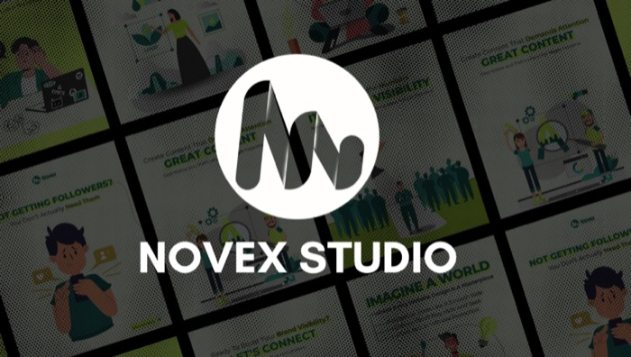

Experience
Where I've grown
-
Social Media Manager + Designer
Managing social media strategy and designing brand content for a leather goods company.
-
Senior Designer
Leading brand identity and social media design for a portfolio of consumer clients.
-
Junior Designer
Supported the creative team on social media content and print collateral.
Selected Work
Case studies that moved the needle
A few projects I'm proud of. Scroll through the stack below.
-
Social Media & Design
Novex Studio
At Novex Studio, I lead the design and execution of visual content across Instagram and LinkedIn. I work closely with the Marketing and Content teams to keep everything on brand, guide the junior designers, and keep an eye on what's working in the industry so campaigns actually land. Since taking this on, brand recognition is up 30% and the audience has grown alongside a full rebrand.
Work Period1 yr 8 mosClient Satisfaction5.0
-
Social Media & Design
MSN Leathers
At MSN Leathers I handle both design and social media management. I create promotional graphics, product showcases, and campaign visuals that match the brand's voice, and I manage the accounts day to day with strategies built to grow engagement, awareness, and sales. The goal is a consistent presence across Instagram, Facebook, and LinkedIn that actually keeps people looking.
Time Period2 mosClient Satisfaction95%
-
Social Media & Design
Nation-Wide
For Nation-Wide Enterprise, I handled design and social media management. I built content that matched their brand identity and communicated their message clearly, from promotional posts to product visuals to full campaigns. Running their social platforms with a focused strategy helped grow both visibility and customer interaction.
Time Period8 mosClient Satisfaction4.8*